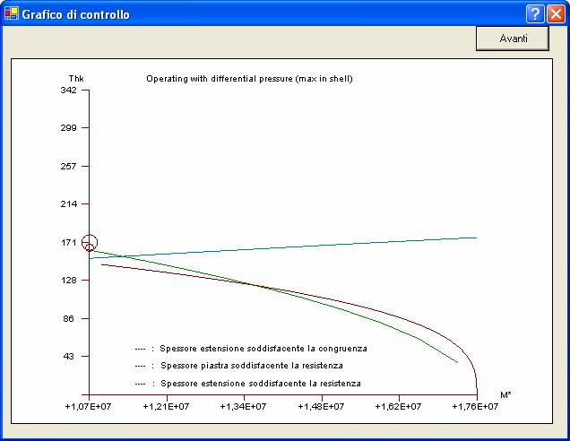

Il calcolo delle piastre con estensione secondo RCB-7.1342 è un calcolo iterativo che presenta un’infinità di soluzioni (vedi rapporto spessori). E’ possibile richiedere la presentazione a video dei dettagli del processo di ottimizzazione tramite grafici come quello qui rappresentato.

In ascisse è riportato il momento iperstatico in lb.in, come da espressione TEMA per M* che corrisponde a valori via via crescenti del rapporto tra lo spessore al centro e lo spessore nell’estensione.
Il simbolo più grosso rappresenta lo spessore minimo proposto per la piastra, il più piccolo quello per l’estensione.
Nel grafico finale relativo alla verifica degli spessori assunti, questi sono rappresentati con un simbolo a forma di quadrato.